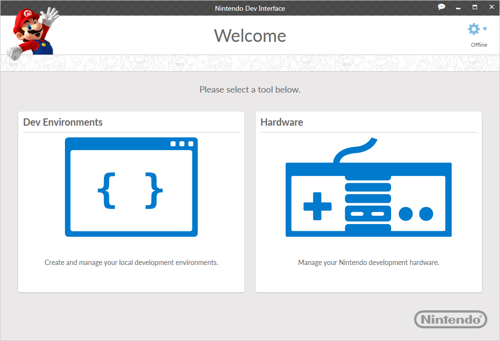

When you start the NDI application, the Welcome screen is displayed. This screen allows you to navigate between the tools supported by NDI.

The screen initially displays the following tools.
More tools may be added in the future through NDI components.
You can rearrange the tools on the Welcome screen by clicking on the titles and dragging them to a desired location. As more tools are added, existing tool icons will resize to accommodate.
CONFIDENTIAL